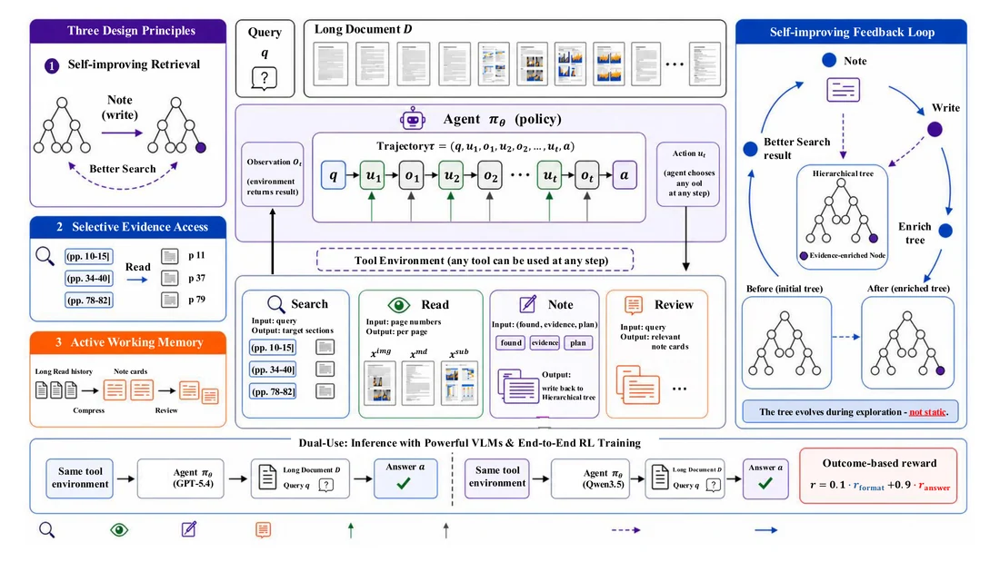

DocAtlas
Long-document understanding as mutable-state interaction
A document harness that grows more useful as an agent searches, reads, and writes evidence back into its memory.
71.4%MMLongBench-Doc accuracy
with GPT-5.4
with GPT-5.4
My contribution
Co-designed the SEARCH / READ / NOTE / REVIEW harness and evidence-updated tree memory. Trained agents with GRPO / DAPO; the RL-trained Qwen3.5-4B policy reached 63.7%, versus 54.4% with direct input.